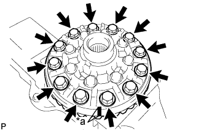
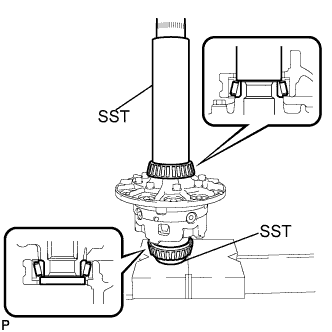
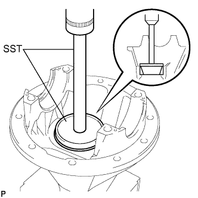
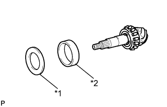
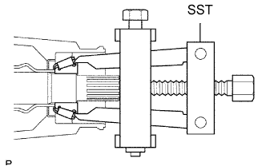
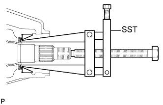
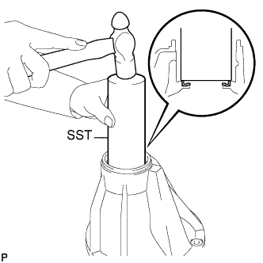
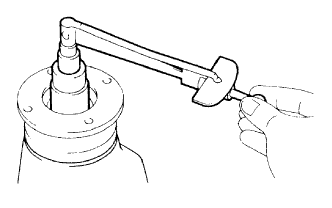

ЧАШКА ЗАДНЕГО ДИФФЕРЕНЦИАЛА В СБОРЕ (для моделей без блокировки дифференциала) > ПОВТОРНАЯ СБОРКА |
| 1. СОБЕРИТЕ КОРПУС ДИФФЕРЕНЦИАЛА |
 |
Установите упорную шайбу полуосевой шестерни заднего дифференциала на полуосевую шестерню заднего дифференциала.
Установите упорную шайбу сателлита заднего дифференциала и сателлит заднего дифференциала на крестовину заднего дифференциала.
Зафиксируйте правый корпус дифференциала на месте.
 |
Установите полуосевую шестерню заднего дифференциала и крестовину заднего дифференциала в правый корпус дифференциала.
 |
С помощью индикатора часового типа измерьте боковой зазор правого корпуса дифференциала, прижимая сателлит к корпусу.
Снимите крестовину заднего дифференциала с правого корпуса дифференциала.
 |
Установите полуосевую шестерню заднего дифференциала и крестовину заднего дифференциала в левый корпус дифференциала.
С помощью индикатора часового типа измерьте боковой зазор левого корпуса дифференциала, прижимая сателлит к корпусу.
| Толщина | Толщина |
| 0,87 - 0,93 мм (0,0343 - 0,0366 дюйма) | 1,17 - 1,23 мм (0,0461 - 0,0484 дюйма) |
| 0,97 - 1,03 мм (0,0382 - 0,0406 дюйма) | 1,27 - 1,33 мм (0,0500 - 0,0524 дюйма) |
| 1,07 - 1,13 мм (0,0421 - 0,0445 дюйма) | - |
 |
Совместите метки и соберите корпус дифференциала из правого и левого корпусов.
| *a | Метка |
С помощью молотка с пластмассовым покрытием установите корпус дифференциала.
Вверните 8 болтов.
| 2. УСТАНОВИТЕ КОРОННУЮ ШЕСТЕРНЮ ДИФФЕРЕНЦИАЛА |
Очистите контактные поверхности корпуса дифференциала и коронной шестерни.
Разогрейте коронную шестерню в воде с температурой примерно 100°C (212°F).
Осторожно извлеките зубчатый венец из кипящей воды.
После того, как поверхность коронной шестерни полностью обсохнет, быстро установите ее в корпус дифференциала.
|  |
Совместите метки на коронной шестерне и корпусе дифференциала.
| *a | Метка |
После того как коронная шестерня в достаточной степени остынет, нанесите герметик-фиксатор на 12 болтов и вверните их.
| 3. УСТАНОВИТЕ ПОДШИПНИК КОРПУСА ЗАДНЕГО ДИФФЕРЕНЦИАЛА |
|  |
С помощью SST и пресса запрессуйте подшипник в корпус дифференциала.
| 4. ПРОВЕРЬТЕ БИЕНИЕ КОРОННОЙ ШЕСТЕРНИ ДИФФЕРЕНЦИАЛА |
 |
Установите корпус дифференциала в чашку и заверните 2 регулировочных гайки так, чтобы в подшипнике не было люфта.
Установите 2 крышки подшипника и закрепите их 4 болтами.
С помощью индикатора часового типа измерьте биение коронной шестерни.
Снимите 2 крышки подшипника, 2 регулировочных гайки и корпус дифференциала.
| 5. УСТАНОВИТЕ ПЕРЕДНИЙ КОНИЧЕСКИЙ РОЛИКОВЫЙ ПОДШИПНИК ЗАДНЕЙ ВЕДУЩЕЙ ШЕСТЕРНИ |
 |
С помощью SST и пресса запрессуйте роликовый подшипник (наружное кольцо) в чашку.
| 6. УСТАНОВИТЕ ЗАДНИЙ КОНИЧЕСКИЙ РОЛИКОВЫЙ ПОДШИПНИК ЗАДНЕЙ ВЕДУЩЕЙ ШЕСТЕРНИ |
|  |
Установите в чашку плоскую шайбу.
С помощью SST и пресса запрессуйте роликовый подшипник (наружное кольцо) в чашку.
| 7. УСТАНОВИТЕ ЗАДНИЙ КОНИЧЕСКИЙ РОЛИКОВЫЙ ПОДШИПНИК ЗАДНЕЙ ВЕДУЩЕЙ ШЕСТЕРНИ |
С помощью SST и пресса установите роликовый подшипник (внутреннее кольцо) на ведущую шестерню.
| 8. ОТРЕГУЛИРУЙТЕ ПРЕДНАТЯГ ВЕДУЩЕЙ ШЕСТЕРНИ ДИФФЕРЕНЦИАЛА |
 |
Установите ведущую шестерню, конический роликовый подшипник задней ведущей шестерни и маслоотражатель ведущей шестерни заднего дифференциала.
 |
С помощью SST установите соединительный фланец.
 |
Используя торцевой ключ с головкой 30 мм, отрегулируйте преднатяг ведущей шестерни, надлежащим образом затянув гайку соединительного фланца.
Удерживая соединительный фланец на месте с помощью SST, затяните гайку.
 |
Динамометрическим ключом измерьте преднатяг.
| Параметр / Устройство | Заданные условия |
| Новый подшипник | 0,83 - 2,18 Н*м (8,64 - 22,2 кгс*см, 7,35 - 19,3 фунт-сила-дюймов) |
| Подшипник, бывший в употреблении | 0,88 - 1,98 Н*м (8,97 - 20,2 кгс*см, 7,79 - 17,5 фунт-сила-дюймов) |
| 9. УСТАНОВИТЕ КОРПУС ДИФФЕРЕНЦИАЛА В СБОРЕ |
 |
Установите 2 наружных кольца подшипников на соответствующие подшипники.
| 10. ОТРЕГУЛИРУЙТЕ БОКОВОЙ ЗАЗОР МЕЖДУ ЗУБЬЯМИ ЗУБЧАТОГО ВЕНЦА |
Установите плоскую шайбу со стороны без зубьев коронной шестерни.
 |
С помощью индикатора часового типа измерьте боковой зазор между зубьями в главной передаче, удерживая соединительный фланец.
Исходя из величины бокового зазора подберите плоскую шайбу для стороны без зубьев коронной шестерни.
Подберите для стороны с зубьями коронной шестерни такую плоскую шайбу, чтобы между наружным кольцом и корпусом не было зазора.
С помощью молотка с пластмассовым покрытием установите плоскую шайбу со стороны с зубьями коронной шестерни.
|
С помощью индикатора часового типа измерьте боковой зазор между зубьями в главной передаче, удерживая соединительный фланец.
| 11. ОТРЕГУЛИРУЙТЕ ПРЕДНАТЯГ ПОДШИПНИКА ПОЛУОСИ |
Снимите плоскую шайбу со стороны зубьев коронной шестерни и, используя микрометр, измерьте ее толщину.
Исходя из величины бокового зазора подберите новую шайбу с толщиной на 0,05-0,20 мм (0,00197-0,00787 дюйма) больше, чем у снятой шайбы, и посредством молотка с пластмассовым покрытием вбейте ее так, чтобы она прилегала к подшипнику.
|
Еще раз проверьте боковой зазор между зубьями в главной передаче.
| Метка | Толщина | Метка | Толщина |
| 70 | 2,05 - 2,07 мм (0,0808 - 0,0816 дюйма) | 62 | 2,41 - 2,43 мм (0,0950 - 0,0957 дюйма) |
| 71 | 2,07 - 2,09 мм (0,0816 - 0,0823 дюйма) | 63 | 2,43 - 2,45 мм (0,0957 - 0,0965 дюйма) |
| 72 | 2,09 - 2,11 мм (0,0823 - 0,0831 дюйма) | 64 | 2,45 - 2,47 мм (0,0965 - 0,0973 дюйма) |
| 73 | 2,11 - 2,13 мм (0,0831 - 0,0839 дюйма) | 65 | 2,47 - 2,49 мм (0,0972 - 0,0980 дюйма) |
| 74 | 2,13 - 2,15 мм (0,0839 - 0,0847 дюйма) | 66 | 2,49 - 2,51 мм (0,0980 - 0,0988 дюйма) |
| 75 | 2,15 - 2,17 мм (0,0847 - 0,0855 дюйма) | 67 | 2,51 - 2,53 мм (0,0988 - 0,0996 дюйма) |
| 76 | 2,17 - 2,19 мм (0,0855 - 0,0863 дюйма) | 68 | 2,53 - 2,55 мм (0,0996 - 0,1000 дюйма) |
| 77 | 2,19 - 2,21 мм (0,0863 - 0,0871 дюйма) | 69 | 2,55 - 2,57 мм (0,1000 - 0,1012 дюйма) |
| 78 | 2,21 - 2,23 мм (0,0871 - 0,0879 дюйма) | 01 | 2,57 - 2,59 мм (0,1012 - 0,1020 дюйма) |
| 79 | 2,23 - 2,25 мм (0,0879 - 0,0887 дюйма) | 32 | 2,59 - 2,61 мм (0,1020 - 0,1028 дюйма) |
| 80 | 2,25 - 2,27 мм (0,0887 - 0,0894 дюйма) | 33 | 2,61 - 2,63 мм (0,1028 - 0,1035 дюйма) |
| 81 | 2,27 - 2,29 мм (0,0894 - 0,0902 дюйма) | 03 | 2,63 - 2,65 мм (0,1035 - 0,1043 дюйма) |
| 82 | 2,27 - 2,31 мм (0,0902 - 0,0891 дюйма) | 34 | 2,65 - 2,67 мм (0,1043 - 0,1051 дюйма) |
| 83 | 2,31 - 2,33 мм (0,0910 - 0,0918 дюйма) | 35 | 2,67 - 2,69 мм (0,1051 - 0,1059 дюйма) |
| 84 | 2,33 - 2,35 мм (0,0918 - 0,0926 дюйма) | 05 | 2,69 - 2,71 мм (0,1059 - 0,1067 дюйма) |
| 85 | 2,35 - 2,37 мм (0,0926 - 0,0934 дюйма) | 36 | 2,71 - 2,73 мм (0,1067 - 0,1075 дюйма) |
| 86 | 2,37 - 2,39 мм (0,0934 - 0,0942 дюйма) | 37 | 2,73 - 2,75 мм (0,1075 - 0,1082 дюйма) |
| 87 | 2,39 - 2,41 мм (0,0942 - 0,0950 дюйма) | 07 | 2,75 - 2,77 мм (0,1082 - 0,1091 дюйма) |
| 12. УСТАНОВИТЕ КРЫШКУ ПОДШИПНИКА |
 |
Совместите метки на крышке и чашке.
| *a | Метка |
Установите 2 крышки подшипника и закрепите их 4 болтами.
| 13. ПРОВЕРЬТЕ БИЕНИЕ КОРОННОЙ ШЕСТЕРНИ ДИФФЕРЕНЦИАЛА |
|
С помощью индикатора часового типа измерьте биение коронной шестерни.
| 14. ПРОВЕРЬТЕ СУММАРНЫЙ ПРЕДНАТЯГ |
|
С помощью динамометрического ключа измерьте преднатяг в положении касания зубьев ведущей и коронной шестерен.
| 15. ПРОВЕРЬТЕ КОНТАКТ ЗУБЬЕВ ЗУБЧАТОГО ВЕНЦА И ВЕДУЩЕЙ ШЕСТЕРНИ |
 |
В 3 различных местах нанесите на 3 или 4 зубца коронной шестерни берлинскую лазурь.
Твердо удерживая соединительный фланец на месте, поверните коронную шестерню в обоих направлениях.
Проверьте пятно контакта зубьев.
|  |
| *1 | Плоская шайба |
| *2 | Задний конический роликовый подшипник задней ведущей шестерни (наружное кольцо) |
| Толщина | Толщина |
| 1,845 - 1,855 мм (0,0726 - 0,0730 дюйма) | 2,085 - 2,095 мм (0,0821 - 0,0825 дюйма) |
| 1,855 - 1,865 мм (0,0730 - 0,0734 дюйма) | 2,095 - 2,105 мм (0,0825 - 0,0829 дюйма) |
| 1,865 - 1,875 мм (0,0734 - 0,0738 дюйма ) | 2,105 - 2,115 мм (0,0829 - 0,0833 дюйма) |
| 1,875 - 1,885 мм (0,0738 - 0,0742 дюйма) | 2,115 - 2,125 мм (0,0833 - 0,0837 дюйма) |
| 1,885 - 1,895 мм (0,0742 - 0,0746 дюйма) | 2,125 - 2,135 мм (0,0837 - 0,0841 дюйма) |
| 1,895 - 1,905 мм (0,0746 - 0,0750 дюйма) | 2,135 - 2,145 мм (0,0841 - 0,0844 дюйма) |
| 1,905 - 1,915 мм (0,0750 - 0,0754 дюйма) | 2,145 - 2,155 мм (0,0844 - 0,0848 дюйма) |
| 1,915 - 1,925 мм (0,0754 - 0,0758 дюйма) | 2,155 - 2,165 мм (0,0848 - 0,0852 дюйма) |
| 1,925 - 1,935 мм (0,0758 - 0,0762 дюйма) | 2,165 - 2,175 мм (0,0852 - 0,0856 дюйма) |
| 1,935 - 1,945 мм (0,0762 - 0,0766 дюйма) | 2,175 - 2,185 мм (0,0856 - 0,0860 дюйма) |
| 1,945 - 1,955 мм (0,0766 - 0,0770 дюйма) | 2,185 - 2,195 мм (0,0860 - 0,0864 дюйма) |
| 1,955 - 1,965 мм (0,0770 - 0,0774 дюйма) | 2,195 - 2,205 мм (0,0864 - 0,0868 дюйма) |
| 1,965 - 1,975 мм (0,0774 - 0,0778 дюйма) | 2,205 - 2,215 мм (0,0868 - 0,0872 дюйма) |
| 1,975 - 1,985 мм (0,0778 - 0,0781 дюйма) | 2,215 - 2,225 мм (0,0872 - 0,0876 дюйма) |
| 1,985 - 1,995 мм (0,0781 - 0,0785 дюйма) | 2,225 - 2,235 мм (0,0876 - 0,0880 дюйма) |
| 1,995 - 2,005 мм (0,0785 - 0,0789 дюйма) | 2,235 - 2,245 мм (0,0880 - 0,0884 дюйма) |
| 2,005 - 2,015 мм (0,0789 - 0,0793 дюйма) | 2,245 - 2,255 мм (0,0884 - 0,0888 дюйма) |
| 2,015 - 2,025 мм (0,0793 - 0,0797 дюйма) | 2,255 - 2,265 мм (0,0888 - 0,0892 дюйма) |
| 2,025 - 2,035 мм (0,0797 - 0,0801 дюйма) | 2,265 - 2,275 мм (0,0892 - 0,0896 дюйма) |
| 2,035 - 2,045 мм (0,0801 - 0,0805 дюйма) | 2,275 - 2,285 мм (0,0896 - 0,0900 дюйма) |
| 2,045 - 2,055 мм (0,0805 - 0,0809 дюйма) | 2,285 - 2,295 мм (0,0900 - 0,0904 дюйма) |
| 2,055 - 5,065 мм (0,0809 - 0,0813 дюйма) | 2,295 - 2,305 мм (0,0904 - 0,0907 дюйма) |
| 2,065 - 2,075 мм (0,0813 - 0,0817 дюйма) | 2,305 - 2,315 мм (0,0907 - 0,0911 дюйма) |
| 2,075 - 2,085 мм (0,0817 - 0,0821 дюйма) | - |
| 16. СНИМИТЕ ГАЙКУ ЗАДНЕЙ ВЕДУЩЕЙ ШЕСТЕРНИ |
 |
Удерживая соединительный фланец на месте с помощью SST, отверните гайку.
| 17. СНИМИТЕ СОЕДИНИТЕЛЬНЫЙ ФЛАНЕЦ ЗАДНЕЙ ВЕДУЩЕЙ ШЕСТЕРНИ В СБОРЕ |
 |
С помощью SST снимите соединительный фланец задней ведущей шестерни в сборе.
| 18. СНИМИТЕ МАСЛООТРАЖАТЕЛЬ ВЕДУЩЕЙ ШЕСТЕРНИ ЗАДНЕГО ДИФФЕРЕНЦИАЛА |
| 19. СНИМИТЕ ПЕРЕДНИЙ КОНИЧЕСКИЙ РОЛИКОВЫЙ ПОДШИПНИК ЗАДНЕЙ ВЕДУЩЕЙ ШЕСТЕРНИ (ВНУТРЕННИЙ) |
|  |
С помощью SST снимите конический роликовый подшипник задней ведущей шестерни (внутренний).
|  |
С помощью SST выбейте конический роликовый подшипник задней ведущей шестерни (наружный).
| 20. СНИМИТЕ ПЕРЕДНИЙ КОНИЧЕСКИЙ РОЛИКОВЫЙ ПОДШИПНИК ЗАДНЕЙ ВЕДУЩЕЙ ШЕСТЕРНИ (НАРУЖНЫЙ) |
| 21. УСТАНОВИТЕ РАСПОРНУЮ ВТУЛКУ ПОДШИПНИКА ВЕДУЩЕЙ ШЕСТЕРНИ ЗАДНЕГО ДИФФЕРЕНЦИАЛА |
 |
Установите новую распорную втулку подшипника на ведущую шестерню.
| 22. УСТАНОВИТЕ МАСЛОНАКОПИТЕЛЬНОЕ КОЛЬЦО ДИФФЕРЕНЦИАЛА |
|  |
С помощью SST вбейте новое маслонакопительное кольцо.
| 23. УСТАНОВИТЕ ПЕРЕДНИЙ КОНИЧЕСКИЙ РОЛИКОВЫЙ ПОДШИПНИК ЗАДНЕЙ ВЕДУЩЕЙ ШЕСТЕРНИ (ВНУТРЕННИЙ) |
| 24. УСТАНОВИТЕ ПЕРЕДНИЙ КОНИЧЕСКИЙ РОЛИКОВЫЙ ПОДШИПНИК ЗАДНЕЙ ВЕДУЩЕЙ ШЕСТЕРНИ (НАРУЖНЫЙ) |
| 25. УСТАНОВИТЕ МАСЛООТРАЖАТЕЛЬ ВЕДУЩЕЙ ШЕСТЕРНИ ЗАДНЕГО ДИФФЕРЕНЦИАЛА |
| 26. УСТАНОВИТЕ САЛЬНИК ЧАШКИ ЗАДНЕГО ДИФФЕРЕНЦИАЛА |
 |
Нанесите универсальную консистентную смазку на новый сальник.
С помощью SST и молотка установите сальник.
| 27. УСТАНОВИТЕ СОЕДИНИТЕЛЬНЫЙ ФЛАНЕЦ ЗАДНЕЙ ВЕДУЩЕЙ ШЕСТЕРНИ В СБОРЕ |
С помощью SST установите соединительный фланец на ведущую шестерню.
| *a | Поверните |
| *b | Удерживайте |
 |
Смажьте резьбу новой гайки гипоидным маслом.
Удерживая фланец с помощью SST, затяните гайку.
| 28. ПРОВЕРЬТЕ ПРЕДНАТЯГ ВЕДУЩЕЙ ШЕСТЕРНИ |
|  |
С помощью динамометрического ключа измерьте преднатяг для зазора между ведущей и коронной шестернями.
| Параметр / Устройство | Заданные условия |
| Новый подшипник | 0,83 - 2,18 Н*м (8,64 - 22,2 кгс*см, 7,35 - 19,3 фунт-сила-дюймов) |
| Подшипник, бывший в употреблении | 0,88 - 1,98 Н*м (8,97 - 20,2 кгс*см, 7,79 - 17,5 фунт-сила-дюймов) |
| 29. ПРОВЕРЬТЕ СУММАРНЫЙ ПРЕДНАТЯГ |
|
С помощью динамометрического ключа измерьте преднатяг в положении касания зубьев ведущей и коронной шестерен.
| 30. ПРОВЕРЬТЕ БОКОВОЙ ЗАЗОР МЕЖДУ ЗУБЬЯМИ В ГЛАВНОЙ ПЕРЕДАЧЕ ДИФФЕРЕНЦИАЛА |
|
С помощью индикатора часового типа проверьте боковой зазор между зубьями в главной передаче.
| 31. ПРОВЕРЬТЕ БИЕНИЕ СОЕДИНИТЕЛЬНОГО ФЛАНЦА ЗАДНЕЙ ВЕДУЩЕЙ ШЕСТЕРНИ В СБОРЕ |
 |
С помощью индикатора часового типа измерьте биение соединительного фланца ведущей шестерни по вертикали и горизонтали.
| Параметр / Устройство | Заданные условия |
| Вертикальное биение | 0,14 мм (0,00551 дюйма) |
| Горизонтальное биение | 0,14 мм (0,00551 дюйма) |
| *a | Вертикальное биение |
| *b | Горизонтальное биение |
| 32. РАСКЕРНИТЕ ГАЙКУ ВЕДУЩЕЙ ШЕСТЕРНИ |
 |
Накерните гайку с помощью молотка и зубила.